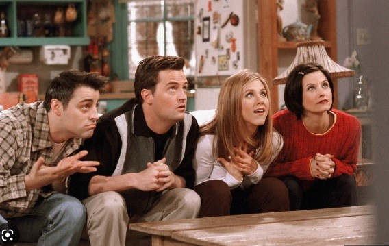

Durante suas 10 temporadas, que foi exibida de 1994 a 2004, Friends acumulou um número impressionante de estatísticas:
236 episódios no total.
A série foi assistida por uma média de 25 milhões de espectadores em sua última temporada.
O episódio final, "The Last One", atraiu uma audiência de mais de 52 milhões de espectadores.
O episódio final, "The Last One", atraiu uma audiência de mais de 52 milhões de espectadores.
A série foi indicada para 62 prêmios Emmy e ganhou 6.
A série foi indicada para 11 prêmios Globo de Ouro e ganhou 1.
A série foi indicada para 29 prêmios Screen Actors Guild e ganhou 6.
Os atores principais ganharam cada um um salário de US$ 1 milhão por episódio nas duas últimas temporadas.
A série gerou um lucro estimado de US$ 1 bilhão por ano em receitas de direitos autorais para a Warner Bros.
Esses números mostram a grandeza e popularidade de Friends, que continua a ser uma das séries mais amadas e assistidas de todos os tempos.


O edifício que inspirou as gravações de FRIENDS fica no endereço 90 Bedford Street,
no charmoso bairro do Greenwich Village, em Nova York. Essa esquina da Bedford St. com a Grove St.
é tão buscada no Google que é facilmente encontrada como “Friends Apartment Building”.